QuickBot MOOC v2 -- Building
- 1. Rocker Switch Wiring Assembly
- 2. DC Plug Wiring Assembly
- 3. Voltage Cable Assembly Set
- 4. Encoder Cable Assembly
- 5. IR Cable Assembly
- 6. IR Sensor Assembly
- 7. BBB-Encoder Wiring Assembly
- 8. BBB-IR Wiring Assembly
- 9. BBB-Power Wiring Assembly
- 10. BBB-Motor Wiring Assembly
- 11. Logic Level Converter Assembly
- 12. Breadboard Assembly
- 13. Motor-Encoder Assembly
- 14. Bottom Chassis With Motors Assembly
- 15. Bottom Chassis With Wheels Assembly
- 16. Bottom Chassis With Voltage Regulators Assembly
- 17. Bottom Chassis With IR Sensors Assembly
- 18. Bottom Chassis With Wiring Assembly #1
- 19. Bottom Chassis With Wiring Assembly #2
- 20. Top Chassis Plate With IR Sensors Assembly
- 21. Top Chassis Plate With Power Wiring Assembly
- 22. Top Chassis Plate With BBB Assembly
- 23. Top Chassis Plate With IR Wiring Assembly
- 24. QuickBot Assembly
- A. Resources
1. Rocker Switch Wiring Assembly
Number to build: 1
Parts
- 2 - 2-pin Female Red JST Battery Connector
- 1 - 2-pin Female 2mm-pitch JST Uh-oh Connector
- 1 - 3-pin Rocker Switch
- 3 - 1/2” Heat Shrink Tubing
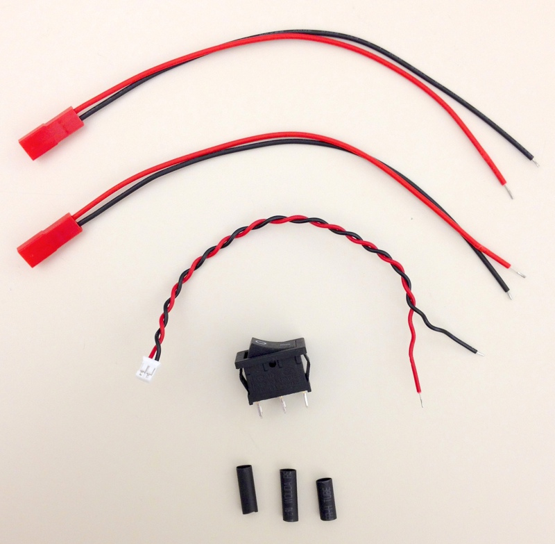 Rocker Switch Wiring Parts
Tools
- Wire Strippers
- Wire Cutters
- Soldering Iron
Instructions
- Cut battery connector wires to 3.5” and strip 1/4” from ends.
- Twist stripped ends of black wires of battery connector together and twist stripped ends of red wires of battery connector together.
- Insert black wires through one heat shrink tube and insert red wries through another one of the heat shrink tubes.
- Untwist Uh-oh wire 1” and strip 1/4” from ends.
- Insert red wire of Uh-oh connector through the last heat shrink tube.
- Solder red wires of battery connectors to the pin on the “O” side of switch.
- Pro tip: Solder wires together first, then solder to the pin of the switch.
- Solder red wire of Uh-oh connector to the middle pin of the switch.
- Solder all black wires together.
-
Heat shrink the tubing around solder points.
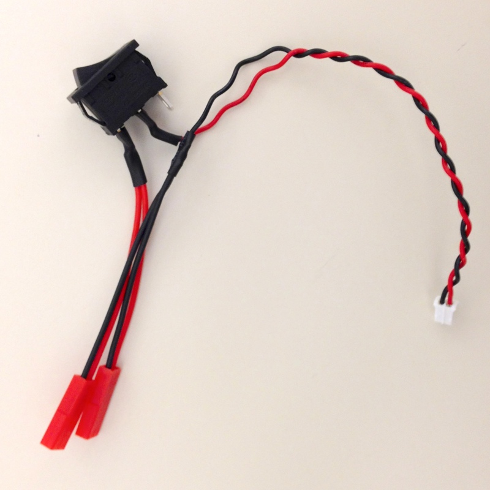 Rocker Switch Wiring Assembly
2. DC Plug Wiring Assembly
Number to build: 1
Parts
- 2 - 2-pin Female 0.1in-pitch JST Volt Reg Connector
- 1 - 2-pin Female 2mm-pitch JST Uh-oh Connector
- 1 - DC Barrel Plug
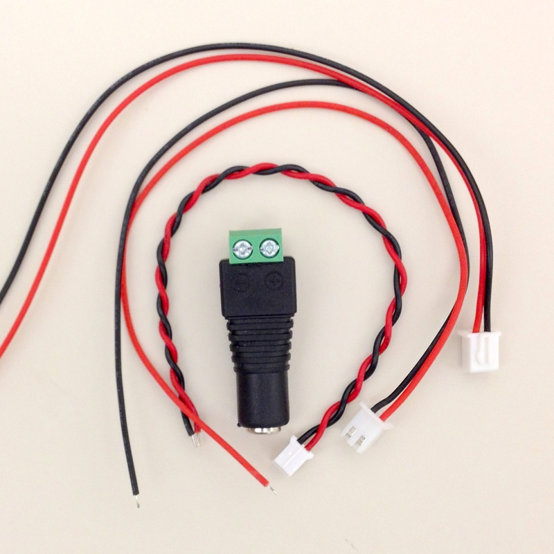 DC Plug Wiring Parts
Tools
- Wire Strippers
- Wire Cutters
- Small Screw Driver
Instructions
- Strip all wires 1/4” from end.
- Twist all 3 black wires together and screw into negative terminal of DC plug.
-
Twist all 3 red wires together and screw into positive terminal of DC plug.
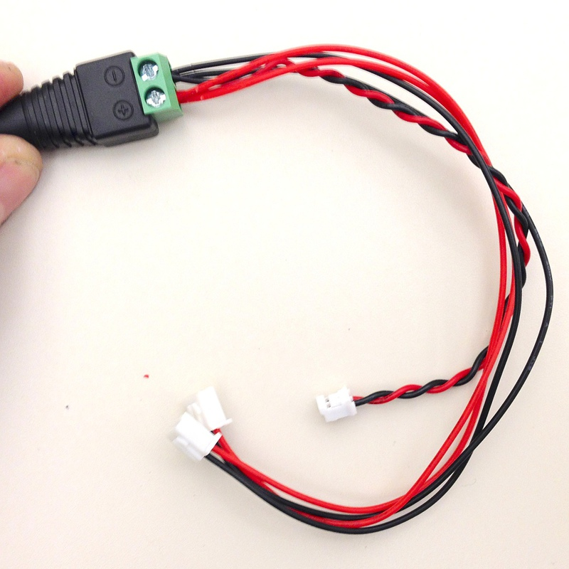 DC Plug Wiring Assembly
3. Voltage Cable Assembly Set
Number to build: 1 (One 9V and One 5V cable)
Parts
- 2 - 2-pin Female 0.1in-pitch JST Volt Reg Connector
- 1 - 1x2-pin 0.1” Crimp Connector Housing
- 1 - 1x1-pin 0.1” Crimp Connector Housing
- 4 - 0.1” Male Crimp Pins
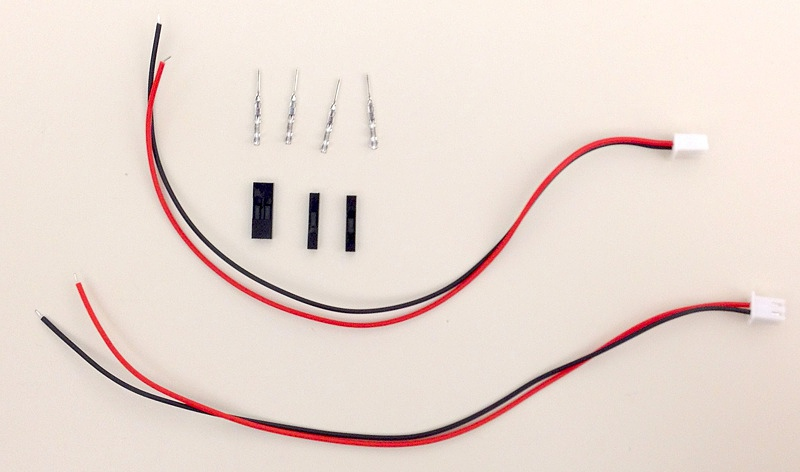 Voltage Cable Parts
Tools
- Wire Strippers
- Wire Cutters
- Crimpers
- Needle Nose Pliers
Instructions
- Cut one set of wires to 5.5” and strip 1/4” from ends.
- Cut the other set of wires to 4.5” and 1/4” from ends.
- Crimp on crimp pins to each wire end.
- Insert 5.5” wires into two 1x1-pin connector housing.
- Insert 4.5” wires into one 1x2-pin connector housing.
- Note: The 5.5” cable will be for the 9V regulator and the 4.5” cable will be for the 5V regulator.
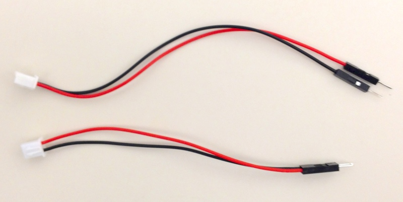 Voltage Cable Assembly Set
4. Encoder Cable Assembly
Number to build: 2
(1 with purple/gray ribbon and 1 with red/orange ribbon)
Parts
- 1 - Encoder Ribbon Cable
- 5 - Female Molex Crimp Pins
- 1 - 5-pin Molex Header
- 2 - 1x2-pin 0.1” Crimp Connector Housing
- 1 - 1x1-pin 0.1” Crimp Connector Housing
- 5 - 0.1” Male Crimp Pins
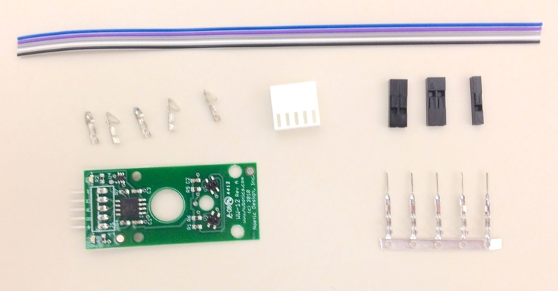 Encoder Cable Parts
Tools
- Wire Strippers
- Wire Cutters
- Crimpers
- Needle Nose Pliers
Instructions
- Separate 3/4” of the ribbon cable in to individual wires.
- Strip 1/8” of insulation from each wire and twist ends so they are not frayed.
- Crimp female Molex crimp pin to each wire.
- Note: Make sure to crimp pin in correct orientation.
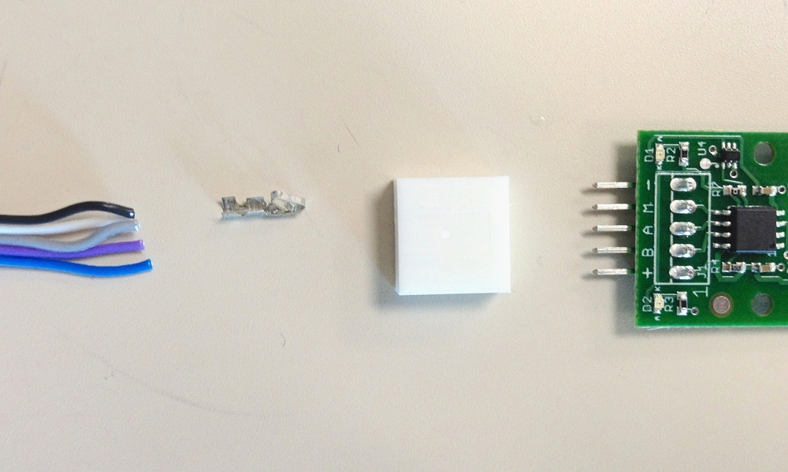
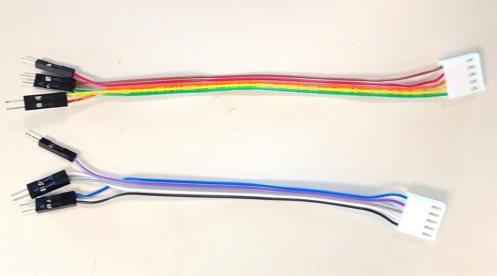
- Separate 3/4” of the other end of the ribbon cable into individual wires.
- Strip 1/8” of insulation from each wire and twist ends so they are not frayed.
- Crimp 0.1” male crimp pin to each wire.
- Insert white & gray or yellow & orange wires into 1x2 0.1” crimp connector housing.
- Insert black & blue or green & brown wires into 1x2 0.1” crimp connector housing.
-
Insert purple or red into 1x1 0.1” crimp connector housing.
 Encoder Cable Assembly
Encoder Cable Assembly
5. IR Cable Assembly
Number to build: 5
Parts
- 1 - 3-pin Female 2mm-pitch JST IR Sensor Connector
- 1 - 1x2-pin 0.1” Crimp Connector Housing
- 1 - 1x1-pin 0.1” Crimp Connector Housing
- 3 - 0.1” Male Crimp Pins
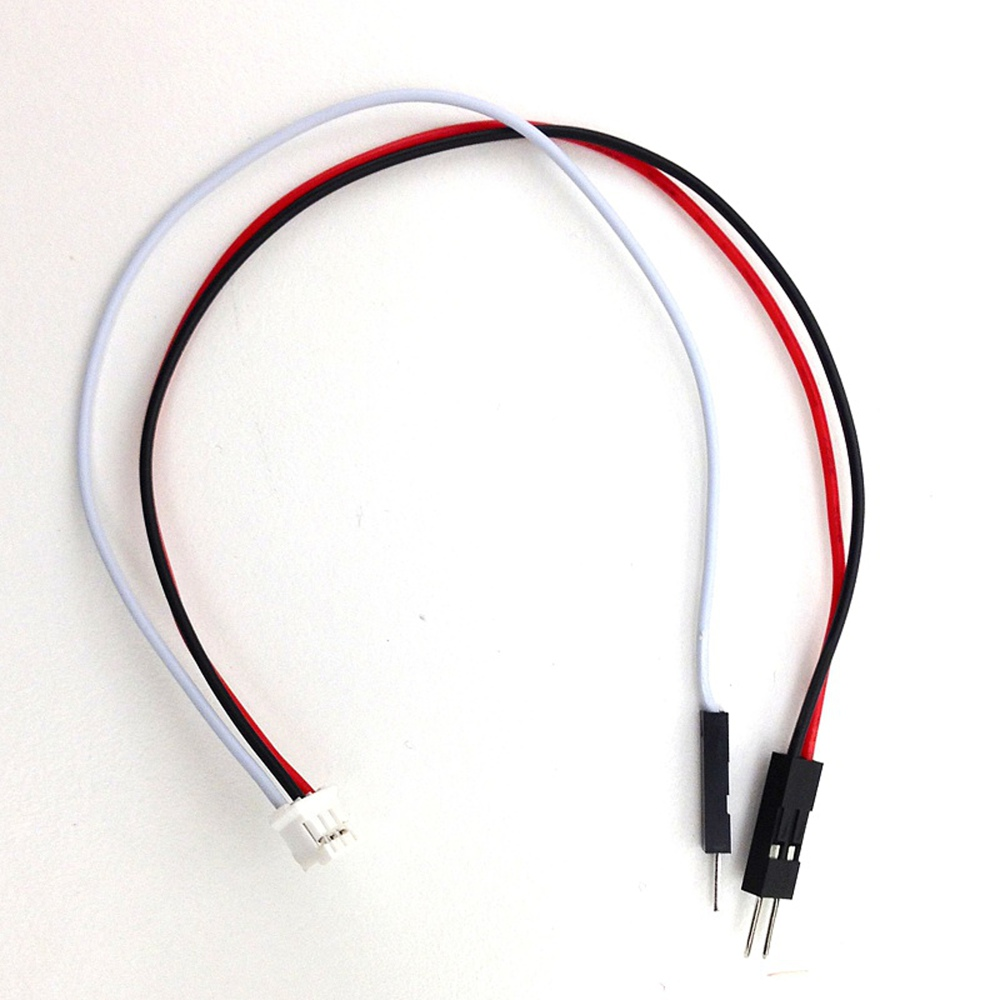 IR Cable Parts
Tools
- Wire Strippers
- Wire Cutters
- Crimpers
- Needle Nose Pliers
Instructions
- Cut connector wires to 6” and strip off 1/8” of insulation from the ends.
- Note: Two of the wire assemblies can be cut to 3” if you to reduce the amount of extra wires on the robot.
- Crimp on crimp pins to each wire end.
- Insert red and black wires into 1x2-pin connector housing.
-
Insert white wire into 1x1-pin connector housing.
 IR Cable Assembly
IR Cable Assembly
6. IR Sensor Assembly
Number to build: 5
Parts
- 1 - IR Sensor
- 2 - 1/4” 4-40 Screws
- 2 - 4-40 Angle Brackets
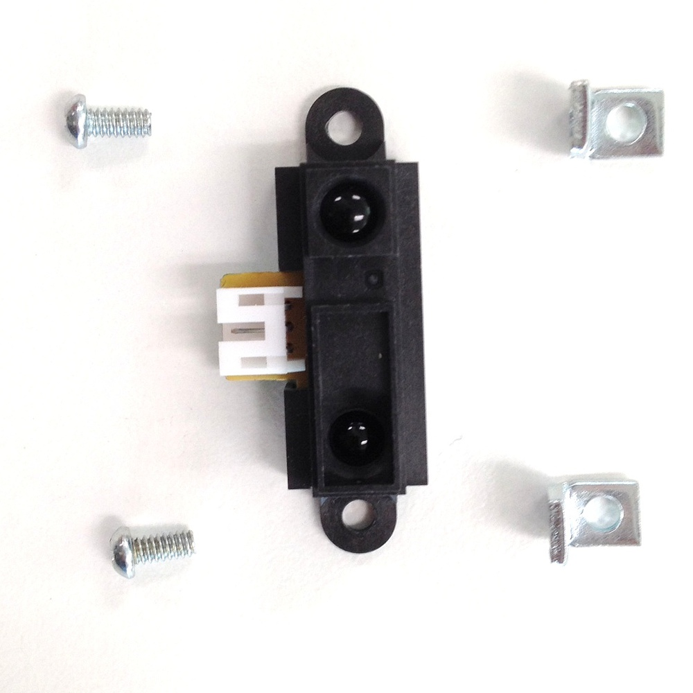 IR Sensor Parts
Tools
- Small Screw Driver
Instructions
-
Insert the screws through IR sensor holes and into the threaded hole of the angle bracket with the angle bracket on the backside of the IR sensor.
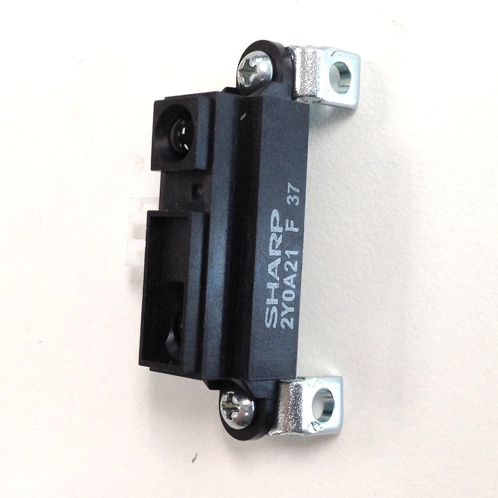 IR Sensor Assembly
7. BBB-Encoder Wiring Assembly
Number to build: 1
Parts
- 4 - 6” Jumper Wire (Green, Yellow, Blue, White)
- Note: If cutting custom length wires 7” wires will be easier to work with.
- 2 - 1x2-pin 0.1” Crimp Connector Housing
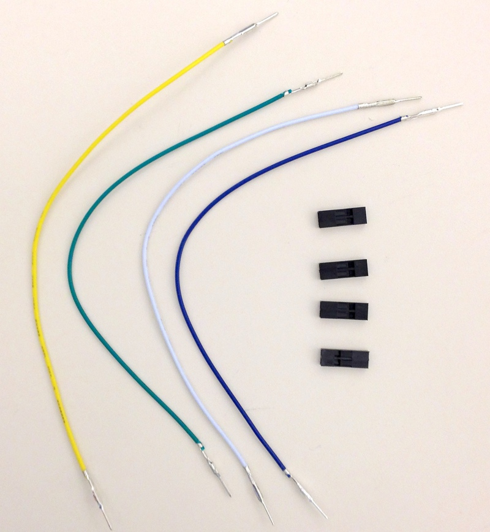 BBB-Encoder Wiring Parts
Instructions
- Pair green and yellow wires and insert into 1x2-pin connector housings.
-
Pair blue and white wires and insert into 1x2-pin connector housings.
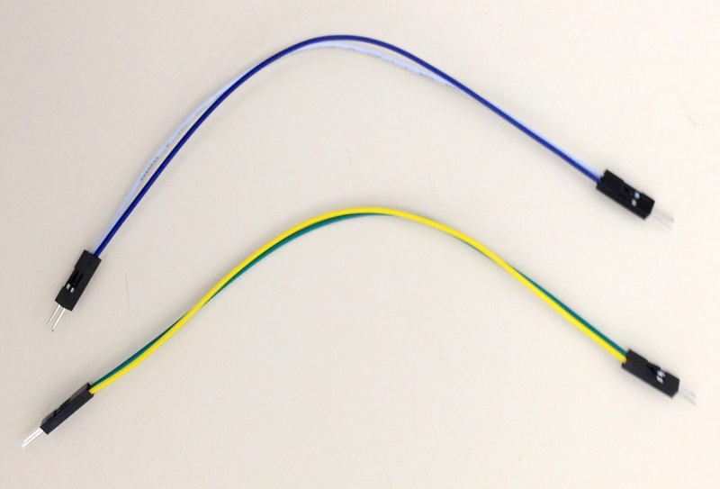 BBB-Encoder Wiring Assembly
8. BBB-IR Wiring Assembly
Number to build: 1
Parts
- 5 - 6” Jumper Wire (Yellow, Green, Blue, White, Red)
- Note: If cutting custom length wires 7” wires will be easier to work with.
- 1 - 1x5-pin 0.1” Crimp Connector Housing
- 5 - 1x1-pin 0.1” Crimp Connector Housing
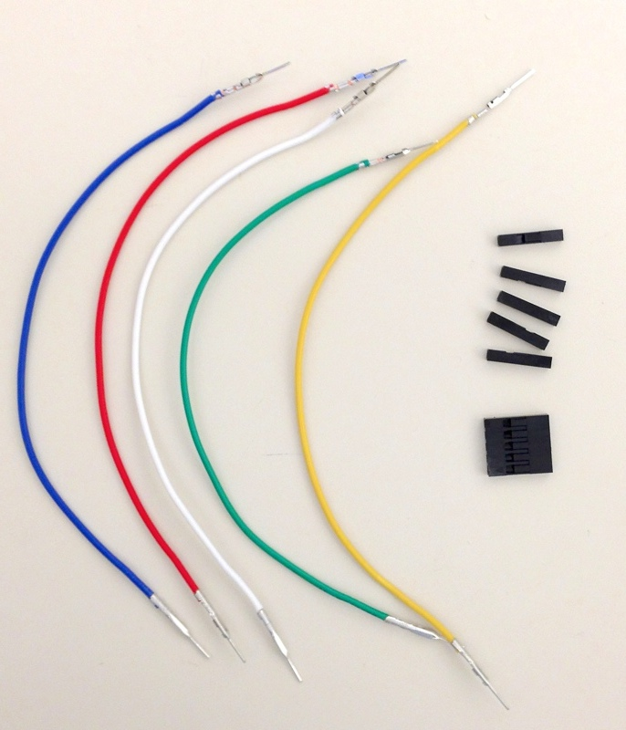 BBB-IR Wiring Parts
Instructions
- Insert yellow, green, blue, white, and red wires (in that order) into 1x5-pin connector housing.
-
Insert all wires into 1x1-pin connector housings.
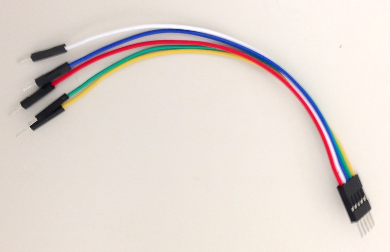 BBB-IR Wiring Assembly
9. BBB-Power Wiring Assembly
Number to build: 1
Parts
- 5 - 6” Jumper Wire (Black, White, Red)
- Note: If cutting custom length wires black and red wires can be 5” and white can be 6”.
- 1 - 1x3-pin 0.1” Crimp Connector Housing
- 1 - 1x2-pin 0.1” Crimp Connector Housing
- 1 - 1x1-pin 0.1” Crimp Connector Housing
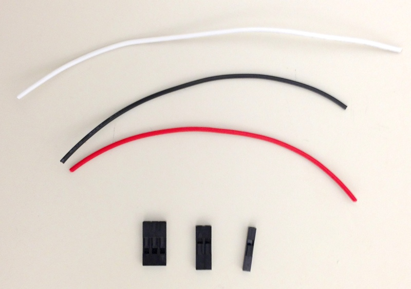 BBB-Power Wiring Parts
Instructions
- Insert black, white, and red wires (in that order) into 1x3-pin connector housing.
- Insert black and red wires into 1x2-pin connector housing.
-
Insert white wire into 1x1-pin connector housing.
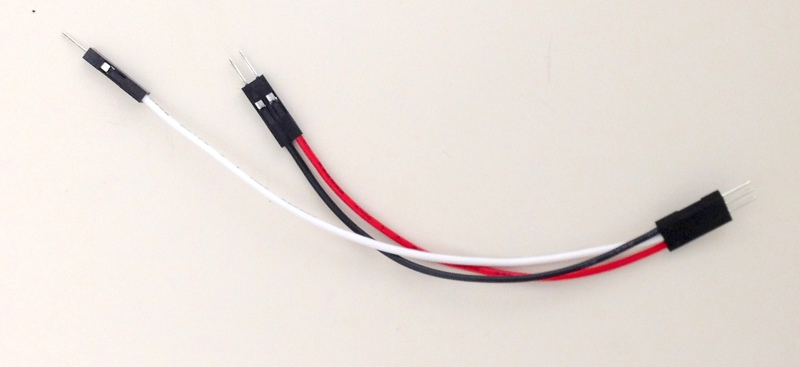 BBB-Power Wiring Assembly
10. BBB-Motor Wiring Assembly
Number to build: 1
Parts
- 6 - 6” Jumper Wire (Black, Blue, White, Green, Yellow, Red)
- Note: If cutting custom length wires blue and yellow wires can be 7”, white and black wires can be 6”, and red and green wires can be 5”.
- 4 - 1x2-pin 0.1” Crimp Connector Housing
- 4 - 1x1-pin 0.1” Crimp Connector Housing
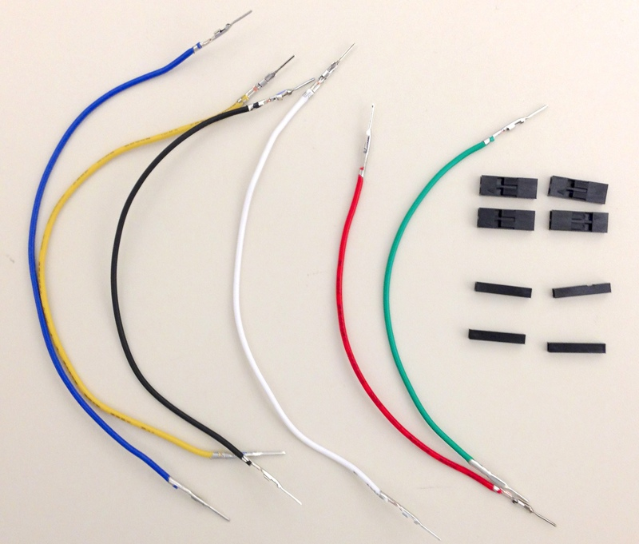 BBB-Motor Wiring Parts
Instructions
- Insert one end of blue wire into 1x1-pin connector housing.
- Insert one end of blue and black wires into 1x2-pin connector housing.
- Insert one end of black and white wires into 1x2-pin connector housing.
- Insert one end of white wire into 1x1-pin connector housing.
- Insert one end of yellow wire into 1x1-pin connector housing.
- Insert one end of yellow and red wires into 1x2-pin connector housing.
- Insert one end of red and green wires into 1x2-pin connector housing.
-
Insert one end of green wire into 1x1-pin connector housing.
 BBB-Motor Wiring Assembly
BBB-Motor Wiring Assembly
11. Logic Level Converter Assembly
Number to build: 1
Parts
- 1 - Logic Level Converter Board
- 2 - 6-pin Male Breakaway Header Pins
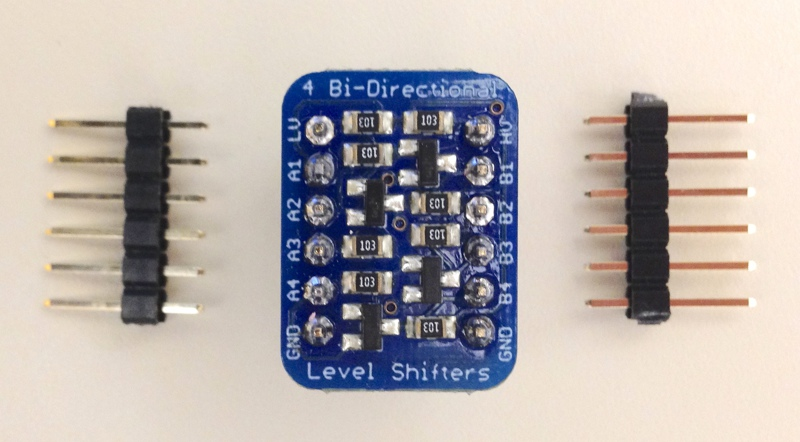 Logic Level Converter Parts
Note
Here I am showing the logic level converter from Adafruit and in the parts list I have one listed from SparkFun. Either one will work. I just had this one on hand but I think the one from SparkFun is slightly cheaper. If using the SparkFun logic level converter take note that the pin layout is slightly different than the Adafruit logic level converter.
Tools
- Soldering Iron
- Solder
Instructions
- Solder header pins to the board.
- Note: The black portion of the header pins should sit flush against the bottom of the board.
- Pro Tip: Place header pins into a breadboard for easier soldering.
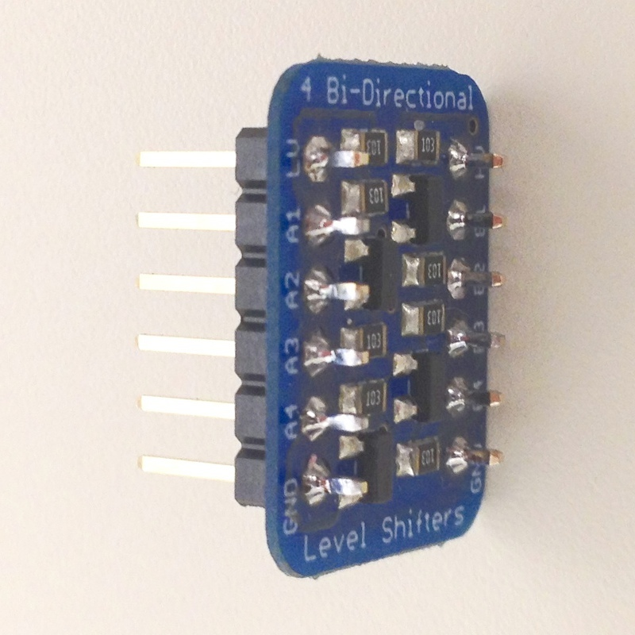 Logic Level Converter Assembly
12. Breadboard Assembly
Parts
- 1 - Logic Level Converter Assembly
- 1 - Breadboard
- 1 - H-Bridge
- 7 - 4/10” Breadboard Jumper Wires (orange)
- 5 - 5/10” Breadboard Jumper Wires (yellow)
- 5 - 20k Ohm Resistors (red-black-orange-gold)
- 5 - 10k Ohm Resistors (brown-black-orange-gold)
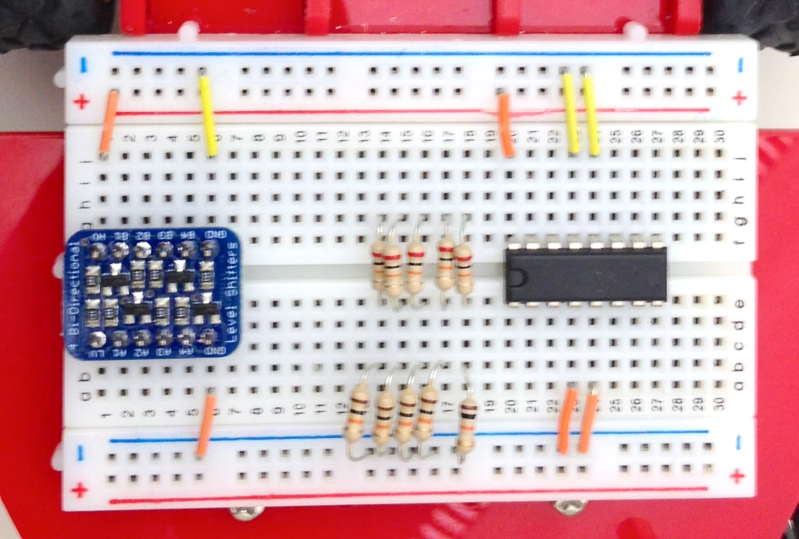 Breadboard Parts
Instructions
-
Instal all components onto breadboard as shown in the image.
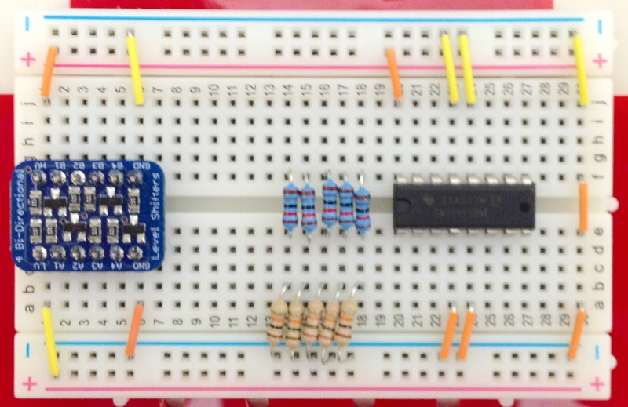 Breadboard Assembly
13. Motor-Encoder Assembly
Number to build: 2
Parts
- 1 - Encoder Disc Sticker
- 1 - Speed Board Disc
- 1 - Wheel Encoder
- 1 - Motor
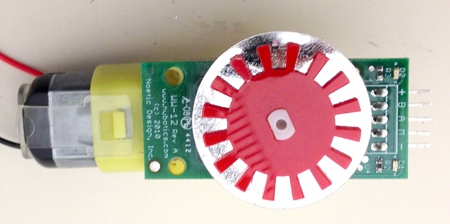 Breadboard Parts
Tools
- Drill
- 9/64 Drill Bit
Instructions
- Stick encoder disc sticker onto wheel encoder disc.
- Note: Make sure to place directly in the center of the disc!
-
Enlarge wheel encoder mounting holes using approximately a 9/64 drill bit.
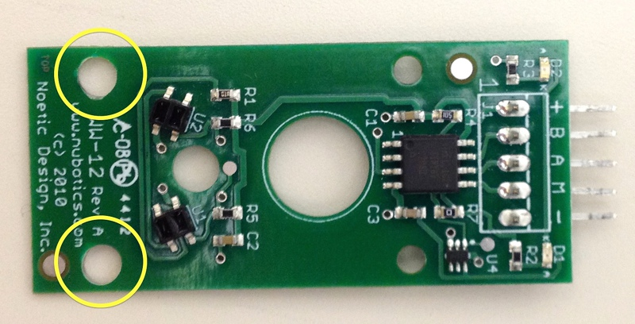 Encoder Holes to Enlarge
- Fit wheel encoder onto motor using round notch as an alignment guide.
-
Slide disc with sticker on to motor axle with the sticker facing the encoder. Keep disc flush with the end of the motor axle.
 Motor-Encoder Assembly
Motor-Encoder Assembly
14. Bottom Chassis With Motors Assembly
Number to build: 1
Parts
- 2 - Motor-Encoder Assembly
- 1 - Bottom Chassis Plate
- 4 - Motor Holders (2 modified, 2 normal)
- 4 - M3*30 Screw
- 4 - M3 Nut
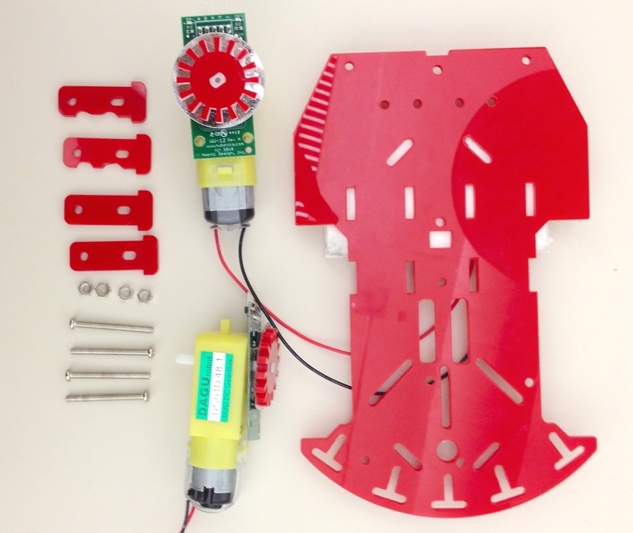 Bottom Chassis With Motors Parts
Tools
- Drill
- Dremel
- Small Screw Driver
Instructions
-
Drill four holes towards the front of the bottom chassis plate as shown in the picture. These holes are for mounting the voltage regulators, so use the voltage regulators as a guild for the placement of the holes.
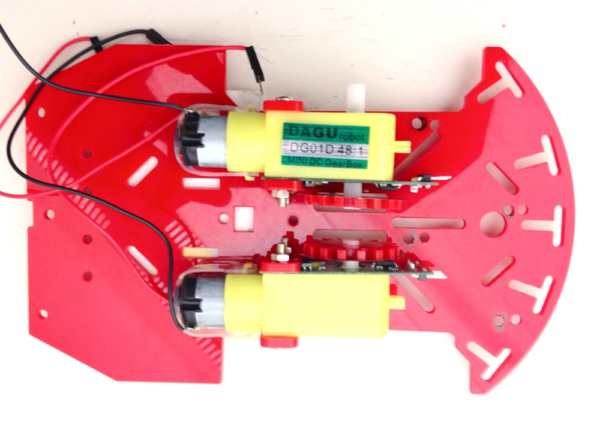 Voltage Regulator Holes on the Topside Bottom Chassis
-
Modify the motor holders with the dremel as shown in the picture. This allows for the encoder to fit on the motor with the motor holders, so use the motor-encoder assembly as a guild when doing this modification.
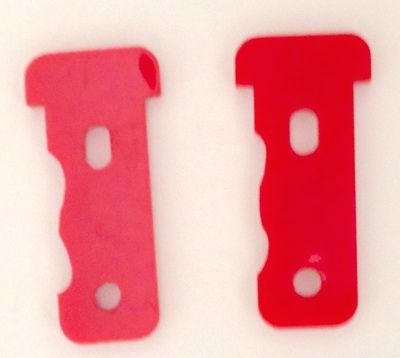 Modified Motor Holders
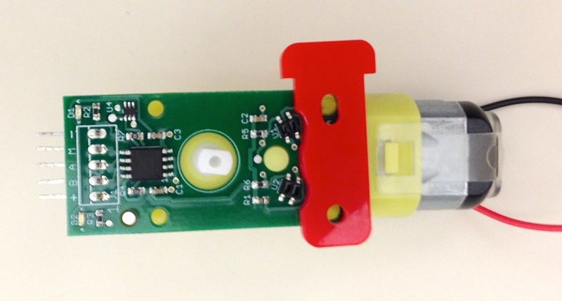
-
Place modified motor holders through slots in the bottom chassis plate, orientated such that modified edge of motor holders are on the front side of chassis (rounded edge). The mounts should stick out towards the bottom of the bottom chassis.
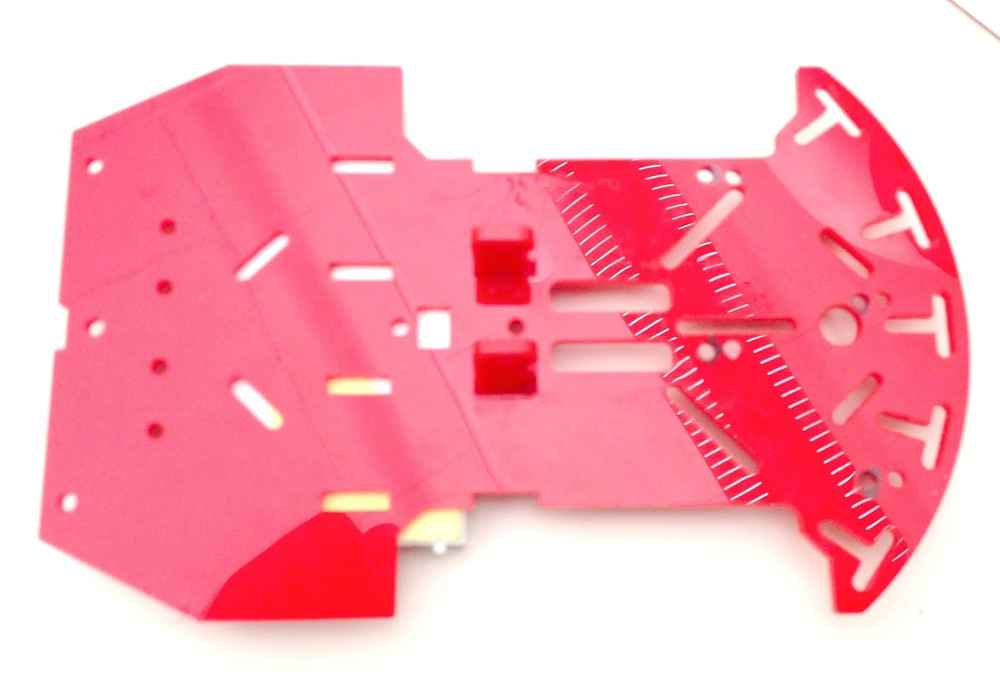
-
Install motor-encoder assembly with the other unmodified motor holder, two M3*30 screws, and two M3 nuts per motor with black wires of motors away from chassis.
 Bottom Chassis With Motors Assembly
Bottom Chassis With Motors Assembly
15. Bottom Chassis With Wheels Assembly
Parts
- 1 - Bottom Chassis With Motors Assembly
- 2 - Wheel
- 1 - Omni Wheel
- 4 - M3*6 Screw
- 2 - L25 Spacer
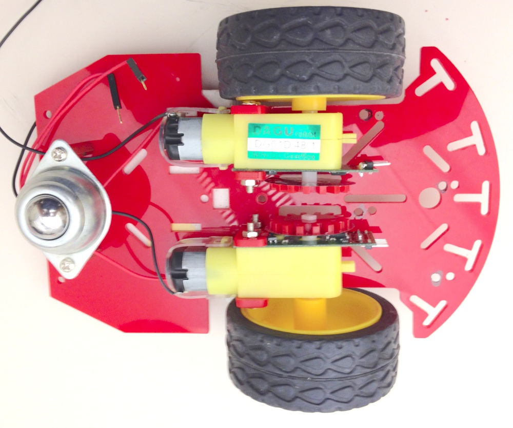 Bottom Chassis With Wheels Parts
Tools
- Small Screw Driver
Instructions
- Slide wheels onto motor axels.
- Screw two L25 spacers onto the omni wheel.
-
Screw omni with spacers onto the bottom back (flat edge) of chassis assembly.
16. Bottom Chassis With Voltage Regulators Assembly
Number to build: 1
Parts
- 1 - Bottom Chassis With Motors Assembly
- 1 - Breadboard Assembly
- 2 - Voltage Regulators
- 4 - 1/2” 4-40 Screw
- 8 - 4-40 Nut
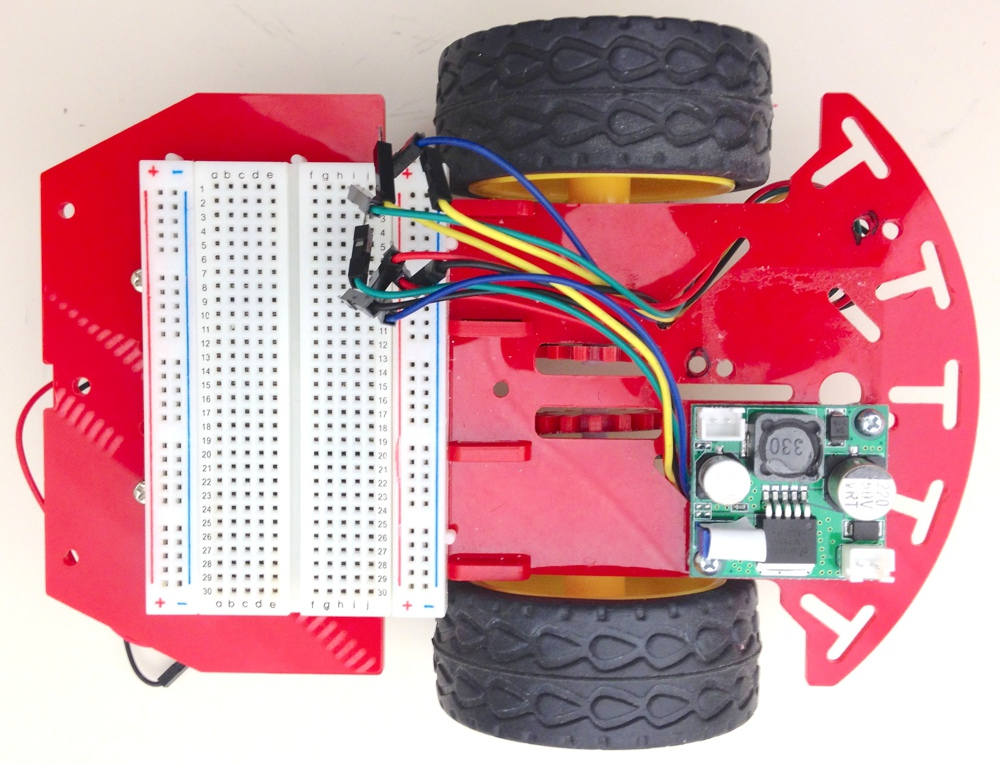 Bottom Chassis With Voltage Regulators Parts
Tools
- Small Screw Driver
- Multimeter
Instructions
-
Insert screws into voltage regulator holes and secure with nuts.
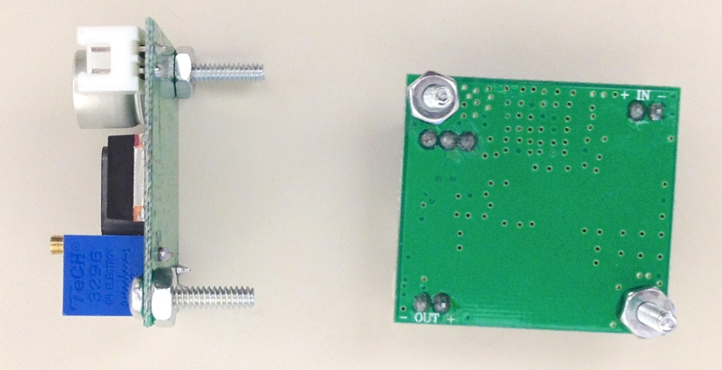 Voltage regulators with Screws
- Add voltage regulators to top and front of chassis assembly. With each screw, use one nut as a spacer between the voltage regulator and the chassis and one nut to secure the screw from the underside of the chassis.
-
Stick on breadboard to top of the bottom chassis. Make sure to have it flush against the motor mounts and omni wheel screws.
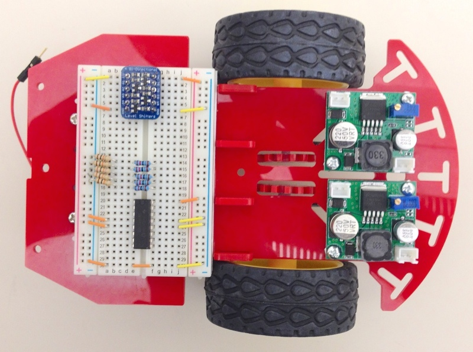 Bottom Chassis With Voltage Regulators Assembly
- Adjust left voltage regulator to 9V using the multimeter.
- Adjust right voltage regulator to 5V using the multimeter.
- Note: You may need to readjust this voltage regulator when BBB is power on with wifi. Adjust so 5V is supplied to BBB.
17. Bottom Chassis With IR Sensors Assembly
Number to build: 1
Parts
- 1 - Bottom Chassis With Voltage Regulators
- 2 - IR Sensor Assembly
- 4 - 1/2” 4-40 Screw
- 4 - 4-40 Nut
- 4 - L25 Spacer
- 4 - M3 Nut
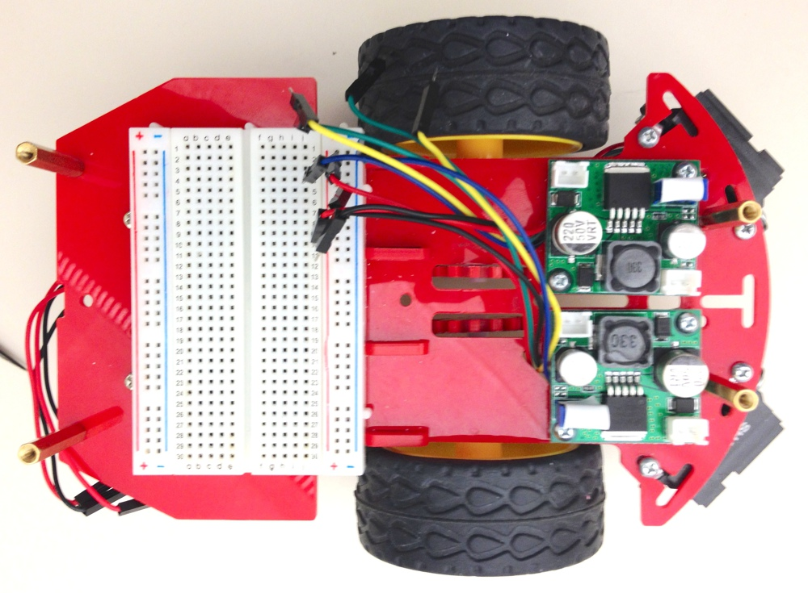 Bottom Chassis With IR Sensors Parts
Tools
- Small Screw Driver
Instructions
- Add IR sensors to front of bottom chassis. The yellow circles in the image below mark the IR sensor location mount points.
-
Mount L25 spacers to four corners of bottom chassis. The green circles in the image below mark spacer location mount points.
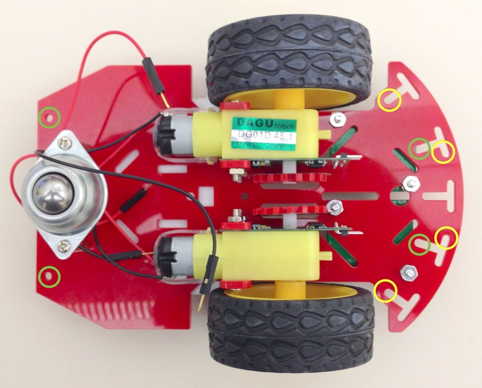 Mount Points
 Top
Top Bottom
Bottom
18. Bottom Chassis With Wiring Assembly #1
Number to build: 1
Parts
- 1 - Bottom Chassis With IR Sensors Assembly
- 2 - Encoder Cable Assembly
- 1 - Voltage Cable Assembly Set
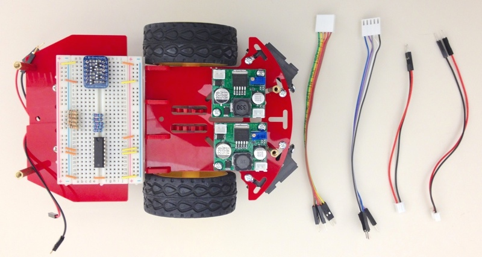 Bottom Chassis With Wiring #1 Parts
Instructions
-
Plug shorter voltage cable into the “OUT” of the right voltage regulator (5V) and the red wire into front “+” rail and the black wire into front “-“ rail of the breadboard.
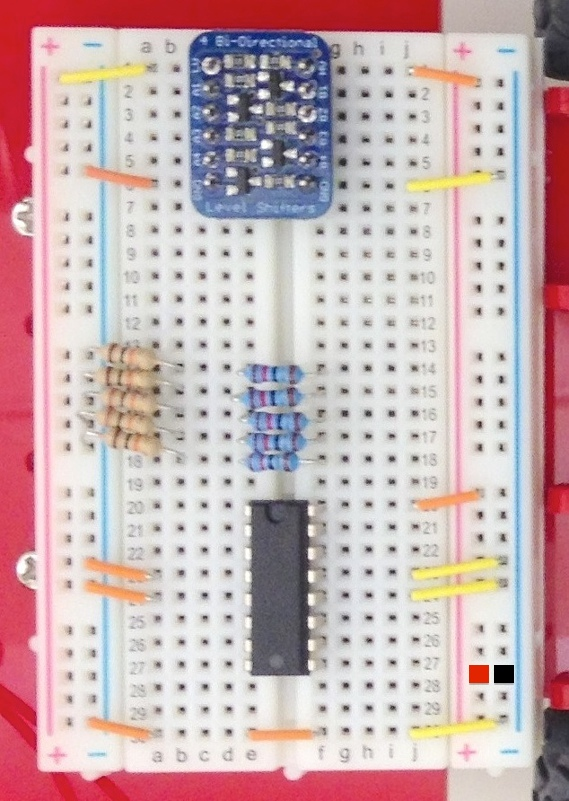 5V Red = 5V Rail, 5V Black = GND Rail
-
Plug longer voltage cable into the “OUT” of the left voltage regulator (9V) and the red wire into pin 8 of H-bridge and the black wire into pin 5 of the H-bridge.
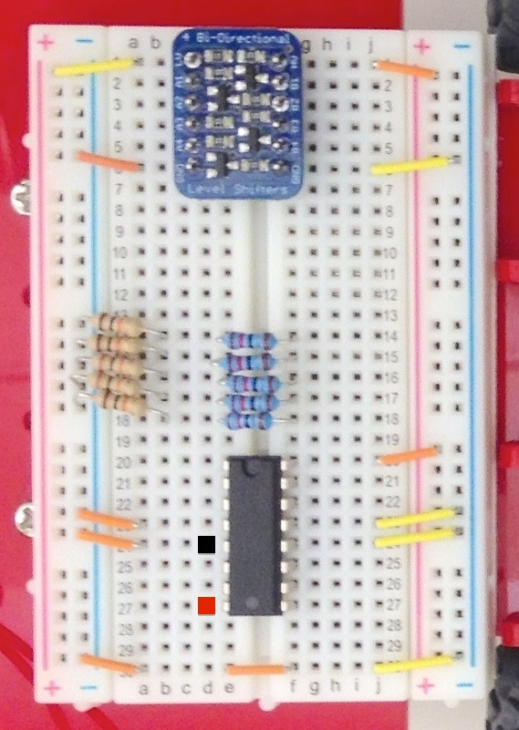 9V Red = Pin 8, 9V Black = Pin 5
-
Plug in blue/purple encoder cable ribbon into right encoder, making sure the black wire goes to “-“ pin of the encoder.
-
Plug in brown/red encoder cable ribbon into left encoder, making sure the green wire goes to “-“ pin of the encoder.
 Encoder Wiring
Encoder Wiring -
String encoder ribbons through middle slot of chassis and plug into breadboard according to the following:
- Blue = 5V Rail
- Purple = GND Rail
- Gray = Pin 9 Logic Level Converter
- White = Pin 8 Logic Level Converter
- Black = GND Rail
- Brown = 5V Rail
- Red = GND Rail
- Orange = Pin 11 Logic Level Converter
- Yellow = Pin 10 Logic Level Converter
-
Green = GND Rail
- Note: If you are using the SparkFun logic level converter the only difference to the AdaFruit logic level converter is that the high, low, and ground connections are on the middle pins instead of the outside pins. Just adjust the wiring accordingly.
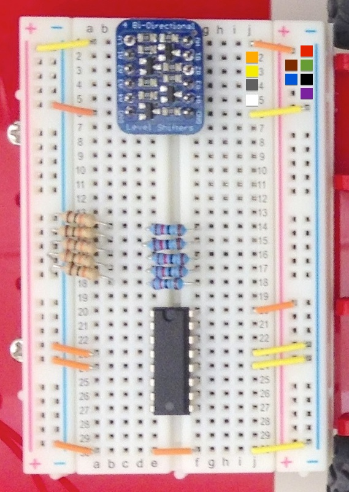 Encoder Wiring
- Plug in left motor black wire into pin 3 of the H-bridge, plug left motor red wire into pin 6 of the H-bridge.
-
Plug in right motor black wire into pin 11 of the H-bridge, plug right motor red wire into pin 14 of the H-bridge.
 Motor Wiring
Motor Wiring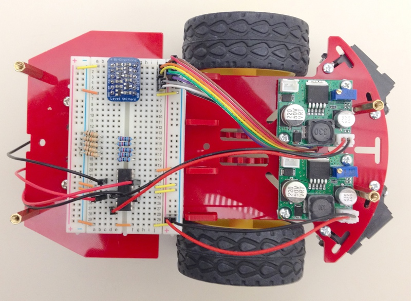 Bottom Chassis With Wiring Assembly #1
19. Bottom Chassis With Wiring Assembly #2
Number to build: 1
Parts
- 1 - Bottom Chassis With Wiring Assembly #1
- 2 - IR Cable Assembly
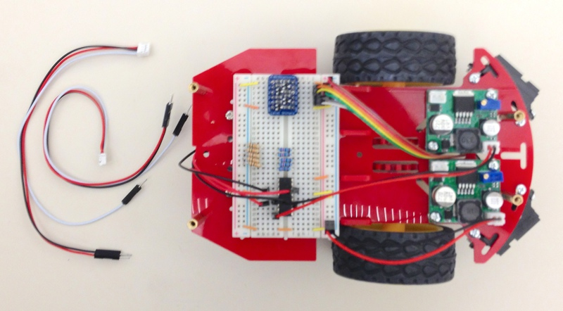 Bottom Chassis With Wiring #1 Parts
Instructions
- Plug IR cable into each of the IR sensors and string through diagonal slot near the voltage regulators.
- Plug the left front IR sensor white wire into the second from the left 20K resistor.
- Plug the right front IR sensor white wire into the second from the right 20K resistor.
- Plug the red wires into the 5V rail.
-
Plug the black wires into the GND rail.
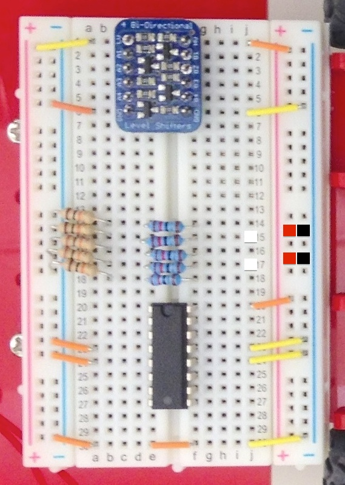 IR Sensor Wiring
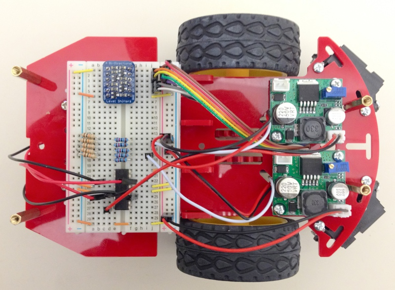 Bottom Chassis With Wiring Assembly #2
20. Top Chassis Plate With IR Sensors Assembly
Number to build: 1
Parts
- 1 - Rocker Switch Wiring Assembly
- 6 - 1/2” 4-40 Screw
- 6 - 4-40 Nut
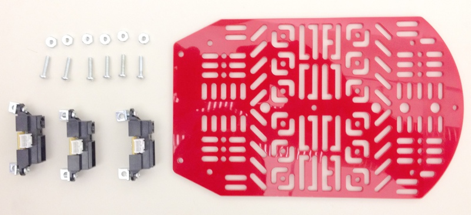 Top Chassis Plate With IR Sensors Parts
Tools
- Small Screw Driver
Instructions
-
Add three IR sensors assemblies to top of plate. The yellow circles in the image below mark the IR sensor location mount points.
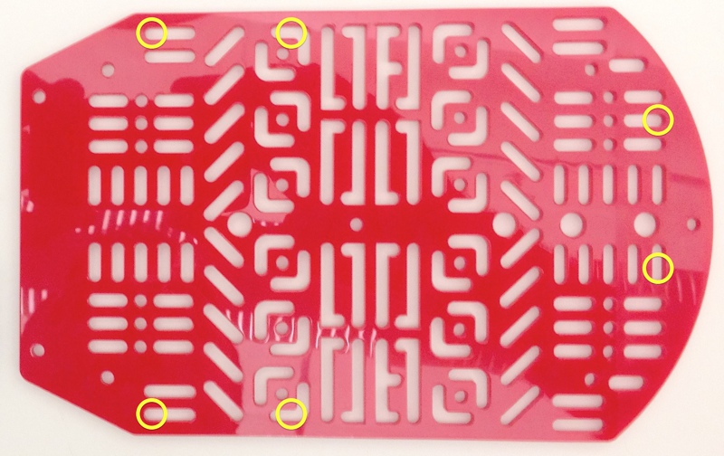 Mount Points
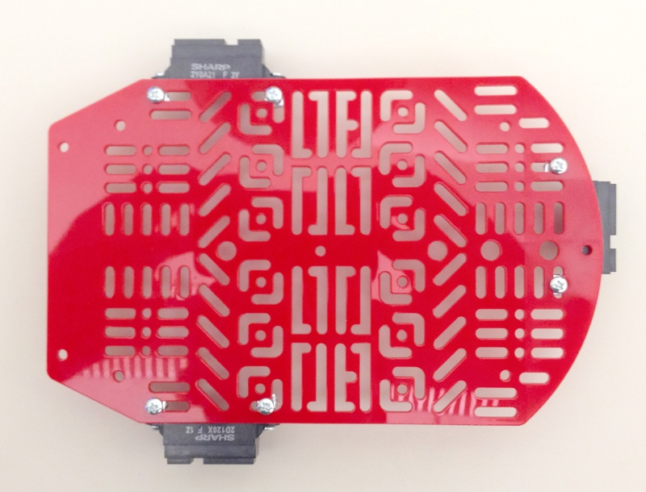 Top
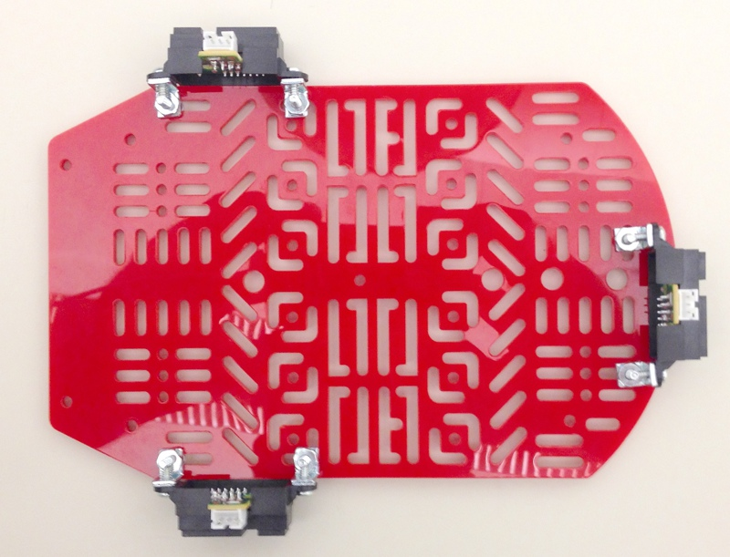 Bottom
21. Top Chassis Plate With Power Wiring Assembly
Number to build: 1
Parts
- 1 - Top Chassis Plate With IR Sensors Assembly
- 1 - Uh-oh battery indicator Board Kit
- 1 - Rocker Switch Wiring Assembly
- 1 - DC Plug Wiring Assembly
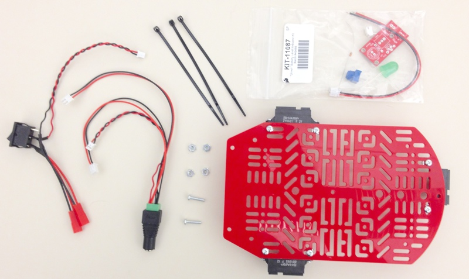 Top Chassis Plate With Power Wiring Parts
Tools
- Soldering Iron
- Solder
- Small Screw Driver
- Multimeter
Instructions
- Solder together the Uh-oh battery indicator board.
-
Insert two screws through holes at the end of Uh-oh board and secure with nuts.
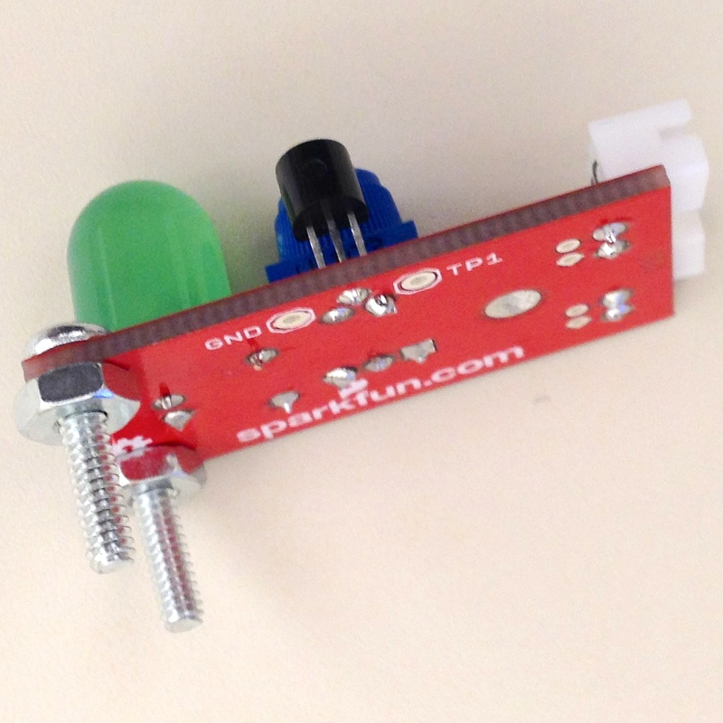 Uh-oh Board with Screws
- Attach Uh-oh board to top chassis plate with the two additional nuts. The yellow circles in the image below mark the locations where the board should be mounted.
-
Zip tie both the rocker switch and DC plug to the top chassis. The green circles in the image below mark the locations of the zip ties.
Mount Locations
-
Plug rocker switch into “Batt” on the Uh-oh board and plug the DC plug into “Sys” on the Uh-oh board.
Top Chassis Plate With Power Wiring Assembly
- Adjust Uh-oh board to have the LED come on if the voltage from the batteries drops below 11V.
22. Top Chassis Plate With BBB Assembly
Number to build: 1
Parts
- 1 - Top Chassis Plate With Power Wiring Assembly
- 4 - L10 Spacer
- 8 - M3 Screw
Top Chassis Plate With BBB Standoffs Parts
Tools
- Soldering Iron
- Solder
- Small Screw Driver
Instructions
- Screw in the four standoff at the locations marked by the yellow circles in the image below.
- Note: The holes in the chassis don’t line up perfectly with the holes on the BeagleBone Black.
Mount Locations
-
Attach BeagleBone Black to top chassis plate with the Ethernet port sticking out to the right side of the chassis.
 Top Chassis Plate With BBB
Top Chassis Plate With BBB
23. Top Chassis Plate With IR Wiring Assembly
Number to build: 1
Parts
- 1 - Top Chassis Plate With BBB Assembly
- 3 - IR Cable Assembly
Top Chassis Plate With IR Wiring Parts
Tools
- Soldering Iron
- Solder
- Small Screw Driver
Instructions
- Connect the three IR cables to the the three IR sensors on the top plate assembly.
Top Chassis Plate With IR Wiring Assembly
24. QuickBot Assembly
Number to build: 1
Parts
- 1 - Bottom Chassis With Wiring Assembly #2
- 1 - Top Chassis Plate With IR Wiring Assembly
- 1 - BBB-Encoder Wiring Assembly
- 1 - BBB-IR Wiring Assembly
- 1 - BBB-Power Wiring Assembly
- 1 - BBB-Motor Wiring Assembly
- 4 - M3 Screw
QuickBot Assembly Parts
Tools
- Small Screw Driver
Instructions
BBB Pin Out
Wiring Diagram
- Connect green-yellow BBB-Encoder wiring assembly to the logic level converter (LLC) and to the BBB.
- Green wire = LLC pin 2 <-> BBB pin P9_22.
- Yellow wire = LLC pin 3 <-> BBB pin P9_21.
- Connect blue-white BBB-Encoder wiring assembly to the logic level converter (LLC) and to the BBB.
- Blue wire = LLC pin 4 <-> BBB pin P9_26.
- White wire = LLC pin 5 <-> BBB pin P9_24.
- Connect BBB-IR wiring assembly to the 10K resistors and to the BBB.
- Yellow wire = left IR <-> BBB pin P9_40.
- Green wire = left front IR <-> BBB pin P9_48.
- Blue wire = front IR <-> BBB pin P9_36.
- White wire = right front <-> BBB pin P9_35.
- Red wire = right <-> BBB pin P9_33.
- Connect BBB-Power wiring assembly to the power rails and to the BBB.
- Black wire = GND rail <-> BBB pin P9_1.
- White wire = 3.3V rail <-> BBB pin P9_3.
- Red wire = 5V rail <-> BBB pin P9_5.
- Connect yellow-red-green BBB-Motor wiring assembly to the H-Bridge and to the BBB.
- Yellow wire = H-Bridge pin 1 <-> BBB pin P9_16
- Red wire = H-Bridge pin 2 <-> BBB pin P8_16.
- Green wire = H-Bridge pin 7 <-> BBB pin P8_14
- Connect white-black-blue BBB-Motor wiring assembly to the H-Bridge and to the BBB.
- White wire = H-Bridge pin 15 <-> BBB pin P8_10.
- Black wire = H-Bridge pin 10 <-> BBB pin P8_12.
- Blue wire = H-Bridge pin 9 <-> BBB pin P9_14.

- Plug in the 2-pin female 0.1in-pitch JST volt reg connectors to the voltage regulator “IN” connection.
- Plug the left IR sensor white wire into the 20K resistor all the way to the left.
- Plug the front IR sensor white wire into the middle 20K resistor.
- Plug the right IR sensor white wire into the 20K resistor all the way to the right.
- Plug the IR sensor red wires into the 5V rail.
- Plug the IR sensor black wires into the GND rail.
-
Attach top plate assembly to bottom plate assembly using four screws.